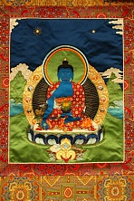

Полное имя Будды Медицины - Бхайшаджьягуру Вайдурьяпрабха, «Исцеляющий Учитель Лазуритового Сияния Манла». Подобно Будде Шакьямуни и Амитабхе он носит одежды монаха и восседает на лотосовом троне. Его левая кисть в мудре медитации, держит монашеский сосуд для подаяний (патра) наполненный нектаром и плодами. Правая рука расположившись на колене с открытой ладонью, в мудре дарования благословения и держит стебель миробалана, растения, известного как царь всех лекарств из-за эффективности в лечении умственных и физических болезней.
Наиболее отличительная особенность Будды Медицины, а его также называют Будда Врачевания или Исцеления - его цвет, глубокий синий лазурит. Этот драгоценный камень был, высоко почитаем Азиатскими и Европейскими культурами в течение больше чем шести тысяч лет и, до недавнего времени, его ценность оспаривала, а порой и превышала стоимость алмаза. Аура тайны окружает этот драгоценный камень, возможно, потому что основные шахты расположены в отдаленной Бадахшанской области северо-восточного Афганистана. Традиционно этот красивый камень использовался, для того чтобы символизировать то, что является чистым или редким.
Менла - один из наиболее почитаемых божеств буддийского пантеона. Сутры (текста), в которых он появляется, сравнивают его Чистую землю (место пребывания) с западным раем Амитабхи, и перерождение там считается таким же высоким, как и перерождение в Буддийском раю Сукхавати. Начитывание его мантры, или даже простое повторение его святого имени, как считают, достаточно для освобождения от трех низких рождений, защищает от опасностей на море и убирает опасность несвоевременной смерти.
Менла ― это воплощение благодати и мудрости, к которым прибегают в прошении здоровья, долголетия и скорейшего Просветления. Тело его приятного цвета лазури. Правая рука его делает мудру даяния, одновременно держа стебель аруры. Арура - особый вид миробалана. Вместе с двумя другими видами миробалана, которые называются брура и кьюрура, «Три Плода» являются базовой субстанцией в аюрведическом искусстве целительства. В левой руке будда держит сосуд с целебным нектаром.
Тот кто прибегает к Менле всем сердцем и повторяет его мантру, делает заслуги в практике здоровья и долголетия.
Его мантра: ТАДЪЯТХА ОМ БЕКХАНДЗЕ БЕКХАНДЗЕ МАХА БЕКХАНДЗЕ РАДЗА САМУДГАТЕ СВАХА
Что обозначает: осуществив путь, содержащийся в великом устраняющим боль, ступенчатый путь к Просветлению, возможно положить конец всем загрязнениям, очиститься и трансформировать обычные тело, речь и ум в ваджрные, священные тело, речь и ум .
В тибетском буддизме Будда врачевания почитается как покровитель врачевателей.